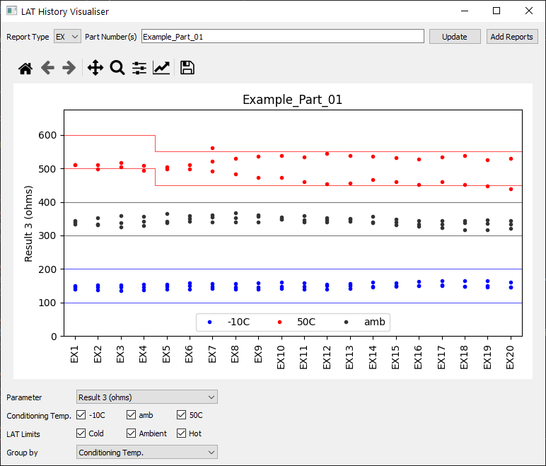
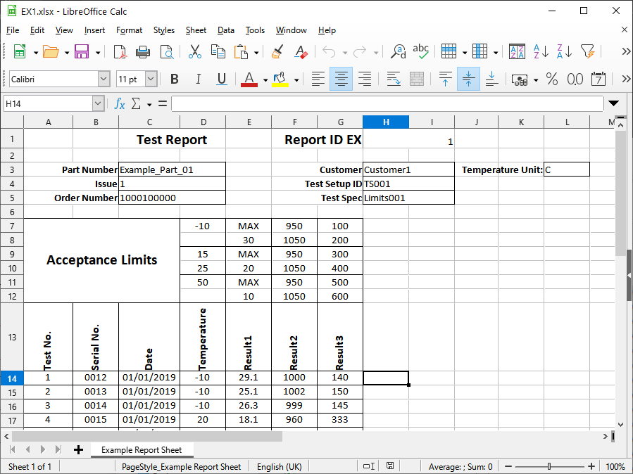
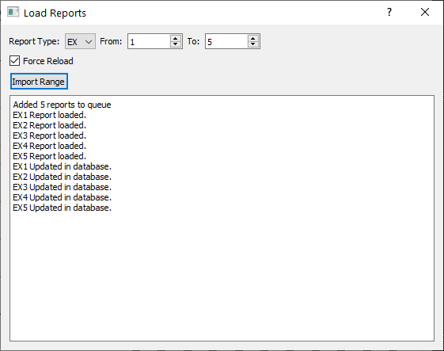
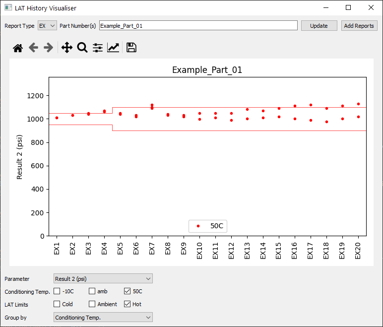
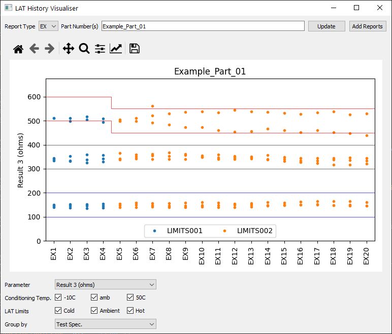
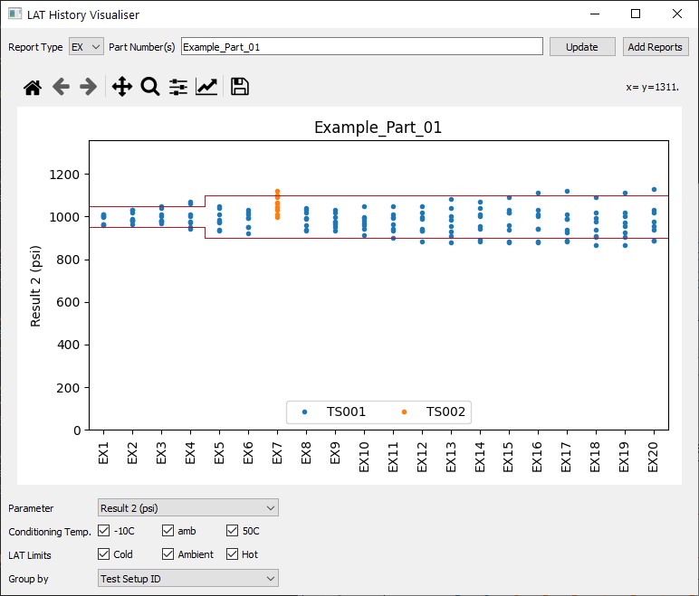

The program is set up to display a series of test results for a specific product, alongside acceptance limits, which can be used to quickly review performance over time (psuedo-data shown).

Data is stored per-test in .xlsx files (psuedo-data shown). Previously this data had to be compiled manually using Excel, which was extremely time consuming and obtrusive.

My Python tool will quickly load a range of files, and save their data to a central SQLite database, where it is easily accessible by the rest of the program. My code utilises multi-threading to minimise read/write delays.

Once data is stored in the database, it can be instantly visualised. Further controls allow filtering by test temperature, and colour-coding by categorical variables.

The active figure can then easily be saved as a .png, .pdf etc. for sharing.

Previously, it was too time consuming to review all data, meaning drifts in performacne could go unseen. Now, all data can be easily reviewed in a few clicks, allowing performance to be monitored proactively.
Back to home